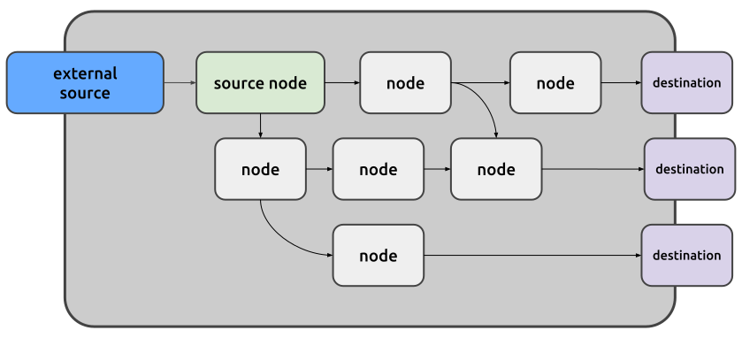
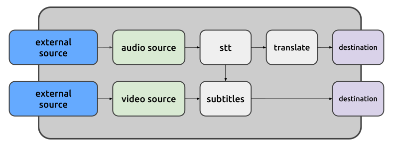
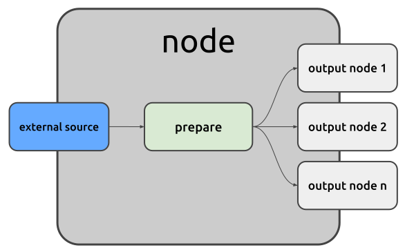
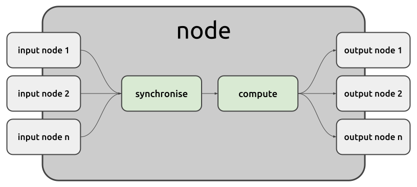
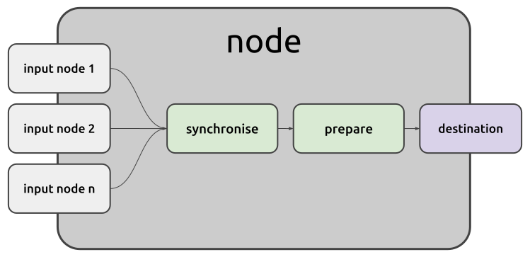

Juturna was designed with developers in mind. This means, there is only a handful of entities you should really get a good look at, then you are good to go, and starting from there you can create new components in minutes and customise them as you see fit.
So, let’s take a look at:
pipelines
nodes
messages and payloads
A pipeline is a processing structure that instantiates and aggregates nodes, managing their links and lifecycle. Pipelines can be seen as multi-input, multi-output entities, where the underlying data consumption and generation are of course performed by the constructing nodes.
A basic, minimal Juturna pipeline can be somehow seen as a DAG , a graph with a single root node with in-degree of 0 (of course, this is not technically true, as the root node of a pipeline still receives data from somewhere), and every other node with an in-degree of 1 or more. Nodes can have as many outbound connections as the pipeline structure requires.
If you look at the picture below, you should see: an external source feeding the root node of our pipeline, a bunch of nodes moving forward processed and transformed data, and some destination (local or remote, it does not really make much difference).

A Juturna pipeline can also be multi-source: several root nodes will feed different branches of the graph. This could be very useful when heterogeneous data need to be gathered from independent sources. As an example, think of a video stream, and its corresponding audio stream, sent using RTP over different ports. In such a scenario, we can design a pipeline that fetches both streams, transcribes and translates the audio, and produces the textual translation and a video stream with subtitles. For Juturna, this is a single pipeline entity, for which 2 source nodes are defined.

A node is a component that receives data from one or more sources (a node source can be external, like we saw earlier, or it can be an upstream edge to another node), processes them, and makes the produced data available to all its downstream destinations.
So, a node receives data, and spits out data.
Broadly speaking, nodes can be split into three logical categories, depending on the task they are programmed to performed:
Source nodes are root nodes that either consume external data (obtained from real-time streams, remote or local files, databases, HTTP or websocket requests…) or generate data, to ultimately push them downstream into the pipeline. In the above pipeline examples, source nodes are the green ones.

Processing nodes (proc node if you are in a hurry) are intermediate nodes in
the pipeline. A processing node receives data from all its upstream connections,
processes them, and send the results downstream into the pipeline. Looking back
at the previous audio/video pipeline example, stt is a proc node with a
single input and multiple outputs, translate is a proc node with a single
input and a single output, and subtitles is a proc node with multiple inputs
and a single output. The missing configuration, multiple input / multiple
output, is still possible albeit not depicted.

Sink nodes deliver to remote or local destinations the data they receive from the nodes they are connected to. Remote destinations could be anything you can think of: HTTP endpoints, websocket servers, databases or caches, RTP streams. Of course, if there is no node capable of transmitting to the destination you need to reach, you can still create a custom node for it!

When designing a pipeline, there are some alternatives for how to get the nodes you need:
use Juturna built-in nodes, that are, all those nodes that are available within the Juturna library itself
use community plugin nodes, that are, nodes that can be distributed through GitHub, the Juturna Hub facility, or any other tool you can think of
implement your own custom nodes (this is the fun solution!)
Nodes within a pipeline pass data around using messages. A message is just a data container with some utilities attached to it. Also, messages can be created with the definition of the type of data they are going to encapsulate (a payload). This comes especially helpful when nodes are defined, so that users can have an idea of what kinda of data a node expects at the input, and produces at the output.